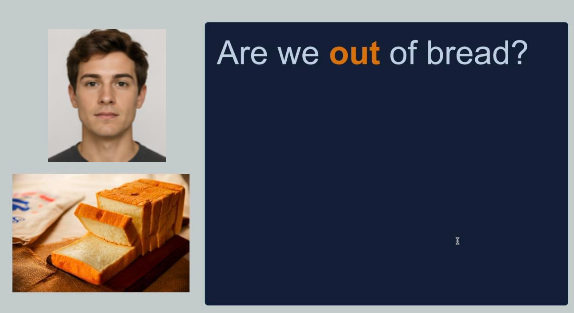

ORLA 2.0: Modernizing an App-Based Aphasia Rehabilitation Tool
ORLA 2.0 is a project I worked on while working as an intern in at the Center for Aphasia Research and Treatment at the Shirley Ryan AbilityLab in Chicago during the summer of 2026. I had the pleasure of working under Dr. Leora Cherney, Dr. Edie Babbitt, and lots of other speech-language pathologists to create this clinical application. I worked on making an updated version of the original ORLA program that was based on a therapeutic strategy created by Leora Cherney.